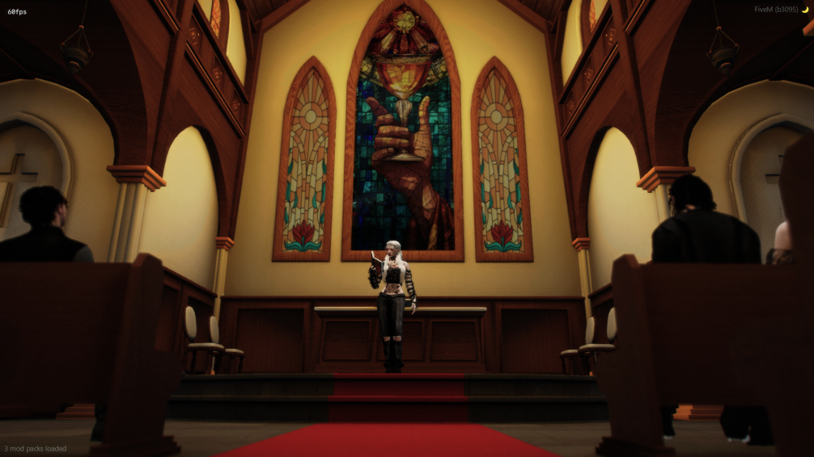
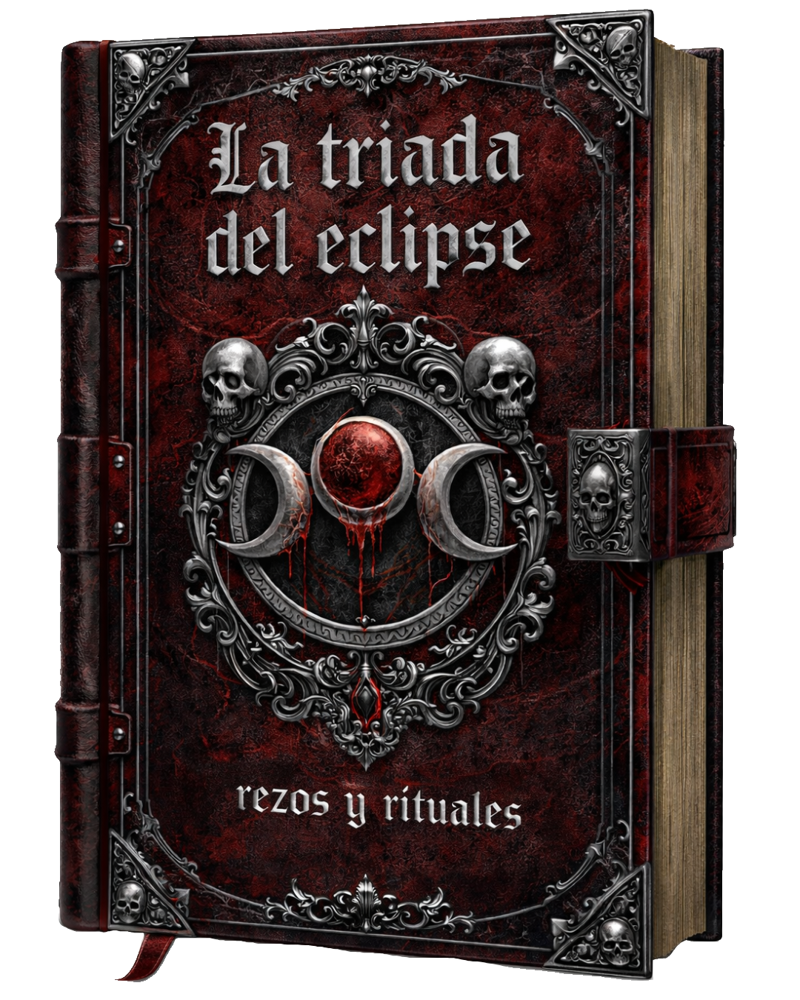
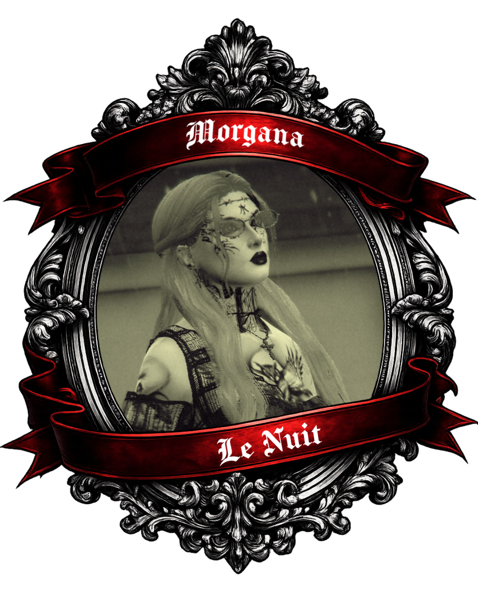
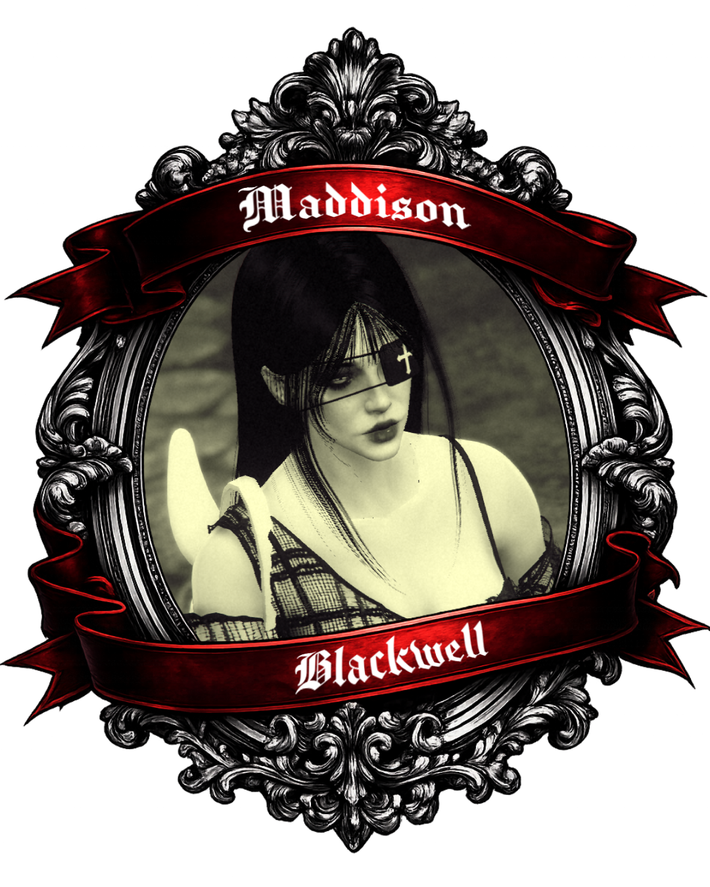
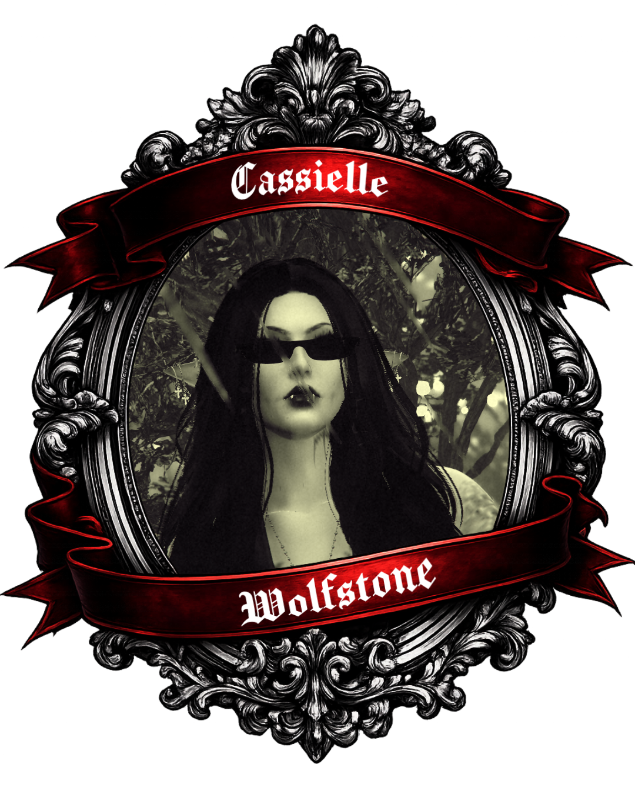

La Orden de la Sangre Eterna
Historia¿Alguna vez has sentido que no encajabas entre los demás? ¿Que la luz del sol te resulta hostil, casi ajena? Nosotros también lo creímos alguna vez. Los médicos intentan explicarlo con nombres como porfiria cutánea tardía, epidermólisis bullosa o xerodermia pigmentosa… diagnósticos que no son más que intentos de encasillar aquello que no comprenden, excusas que nos alejan de la verdad de los elegidos. Pocos entre los mortales saben que existimos. Nos temen, aunque con el paso de los años nos hemos convertido más en un susurro del folclore que en una realidad palpable. Nos movemos entre sombras, y solo despertamos cuando el aroma de la sangre nos llama y la luz de la luna nos ofrece su resguardo. Somos quienes veneran la tríada del eclipse, aguardando una inmortalidad que trascienda la debilidad del sol. Sedientos de sangre, sí, pero también pacientes: aprendemos a convivir con los hábitos de los mortales para no levantar sospechas. Y aun así, extendemos nuestra mano a aquellos hermanos que sienten el mismo llamado. |
 |
|
 |
RezosNuestros rezos y alabanzas se elevan hacia la Tríada del Eclipse, un culto sagrado formado por Astaroth, Amon y Absalón, cuyas sombras guían nuestro destino y custodian el camino que seguimos.
Oh Astaroth, eco de la noche eterna,
Señor del conocimiento prohibido,
abre tus ojos sobre nosotros,
los hijos de la sangre, los que
caminan entre velos.
Concédenos tu sombra y tu juicio,
permite que nuestros pasos no se pierdan
en la mentira de la luz y el calor.
Guíanos, Astaroth,
en el arte de ver más allá del velo,
y mantén vivo el fuego oscuro que
alimenta nuestra esencia.
Amon, guardián del tormento y del pacto,
bestia oculta bajo la piel de los mortales,
escucha la voz de los que no necesitan latido.
Danos tu furia contenida,
tu fuerza que arde como brasas negras,
y tu voluntad para quebrar lo que se oponga
a los hijos de la noche.
Que tu rugido resuene en nuestra sangre,
y en tu nombre, Amon,
nuestra oscuridad sea temida y respetada.
|
Absalón, viajero de los silencios profundos,
testigo de lo que yace bajo las tumbas,
recibe nuestras voces bañadas en sombra.
Concede a la secta tu calma fúnebre,
tu mirada que penetra la muerte,
y tu custodia sobre los juramentos que
pronunciamos bajo la luna negra.
En tu memoria guardamos la fidelidad,
y en tu nombre sellamos nuestro destino
como hijos de la sangre eterna.
Astaroth, Sabiduría Oscura.
Amon, Furia Silente.
Absalón, Custodio de la Sangre.
En el cruce de sombras levantamos
este juramento. Que nuestras almas
pertenezcan a la noche, que nuestra
sangre sea vínculo y ofrenda, y que
el eclipse eterno cubra nuestro camino
hasta el fin de los tiempos.
Que el eco de nuestra unión resuene
más allá de la carne, y que los lazos
aquí sellados no puedan romperse ni por
la luz ni por la muerte.
Bajo las tres voluntades que
gobiernan la oscuridad, prometemos
caminar como uno solo,
hijos de la eternidad roja.
|

|
|
 |
MiembrosLa cúpula:
Morgana Le Nuit es una criatura de la noche, nacida bajo los cielos grisáceos de París, cuyo vínculo con la oscuridad trasciende la mera superstición. Desde su infancia, la luz del día la quemaba y la hacía sentir demasiado expuesta, mientras que la noche la abrazaba como un manto protector. Su transformación en vampira no fue un accidente, sino un despertar: su cuerpo, rechazando la claridad del sol, confirmó lo que su alma siempre había sabidos De piel pálida y venas marcadas, Morgana se mueve con una gracia inquietante, y sus sentidos despiertan con la luna alta, captando sonidos, luces y sombras que otros nunca notarían. Más allá de su naturaleza nocturna, su curiosidad la conduce por los rincones más secretos de su ciudad natal: las antiguas catacumbas de París, donde los ecos de los muertos y la penumbra del subsuelo alimentan su fascinación por lo oculto y lo prohibido. Elegida por la noche, la luna es su testigo, y bajo su luz se revela completa, despierta, y sobre todo, auténtica. |
Maddison Blackwell nació bajo cielos densos y grises en Reino Unido, marcada desde niña por una sensibilidad que los demás llamaban “delirio” y que la sociedad intentó corregir encerrándola en un sanatorio mental. Pero aquellos muros blancos, las puertas cerradas y las miradas condescendientes no hicieron más que revelar lo que siempre había sabido: su lugar no estaba entre los vivos comunes, sino en la sombra, donde la noche la aceptaba y la iluminaba al mismo tiempo. Su piel pálida y su presencia etérea delatan una existencia que trasciende lo humano. Cada paso que da en la oscuridad parece medido por la luna misma, y su mirada profunda refleja siglos de percepciones intensas y secretos que la luz del día nunca podría comprender. Los pasillos del sanatorio, que para otros fueron prisión, para ella fueron un preludio; un espacio donde su mente y su cuerpo aprendieron a reconocer la verdad que los demás negaban: que pertenece a la noche y al misterio que esta protege. Maddison camina entre sombras con una elegancia inquietante, y en cada gesto revela la claridad que solo los elegidos de la oscuridad poseen. Su pasado humano no la debilita; la fortalece, recordándole que la verdadera libertad no está en la luz, sino en la noche, en la luna y en la sensación de ser exactamente quien nació para ser: completa, despierta y eternamente nocturna. |
 |
|
 |
Cassielle Wolfstone nació en Rumanía, una tierra marcada por bosques oscuros, castillos antiguos y leyendas que nunca terminan de morir. Desde pequeña, su piel mostró una hipersensibilidad extrema al sol, obligándola a evitar la luz del día y a encontrar refugio en la noche, donde siempre se sintió más viva y en calma. Con el tiempo, esa diferencia, junto a sus propios trastornos y la atmósfera cargada de mitos de su entorno, la llevó a convencerse de que su naturaleza estaba más cerca de la de una vampira que de la de una persona común. Decidida a reflejar lo que sentía ser, modificó su aspecto: se colocó colmillos vampíricos y se operó las orejas para dejarlas en punta, adoptando una imagen tan inquietante como elegante. Su piel pálida y su presencia silenciosa refuerzan esa aura nocturna que la rodea. Entre quienes conocen su historia circula un rumor persistente: que podría ser un lejano eco de la sangre del legendario Vlad III Drácula. Sea verdad o mito, Cassielle camina con la seguridad de quien ya encontró su lugar: la noche. |
Información de Próximos EventosSi has sido capaz de acceder a esta página, podras acudir a la proxima reunion. Recuerda que las invitaciones son intransferibles. La existencia de dichas reuniones deben permanecer en el mayor anonimato. Rogamos estrema discreccion. Descargar invitación | |
{kind=link}
Enlaces Externos
Recursos útiles para Lenguajes de Marcas:
- Documentación HTML
- Tutorial HTML
- Video tutorial CCS
- Durante la realización de este trabajo tambien se realizaron preguntas momentaneas a ChatGPT